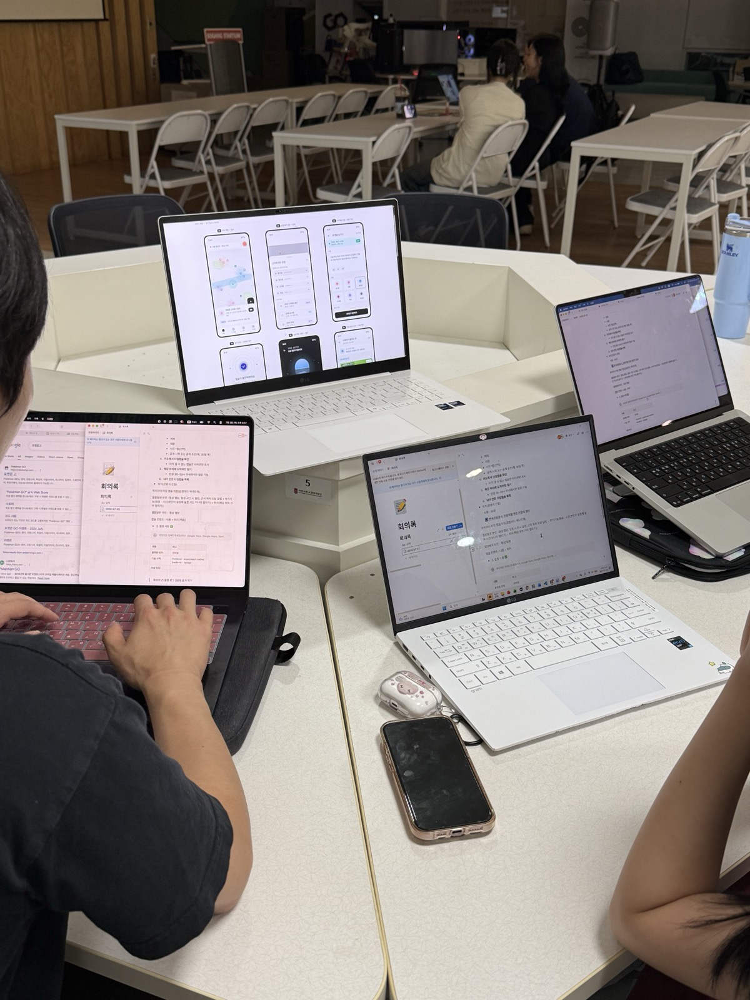
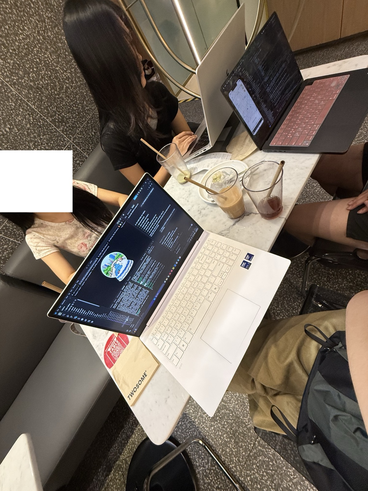

POINTER is a team of four Computer Science students at Sogang University.
View productsThe moments we hold onto are almost always remembered together with a "where." POINTER is a team thinking about how to leave something at that spot and open it again — in the same place — once time has passed. We build the kind of product we'd want to keep using ourselves.
POINTER is four Computer Science students at Sogang University, all members of the club "hateslop."
Between study rooms and cafés we wrote meeting notes and leaned into each other's screens to get things right. What we really made was the time we spent together.

